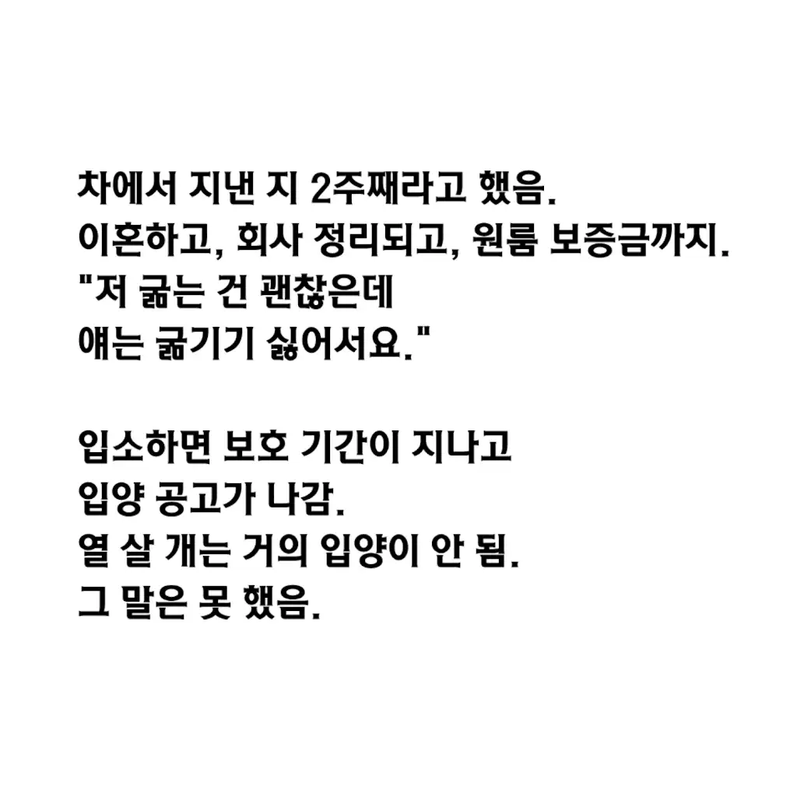
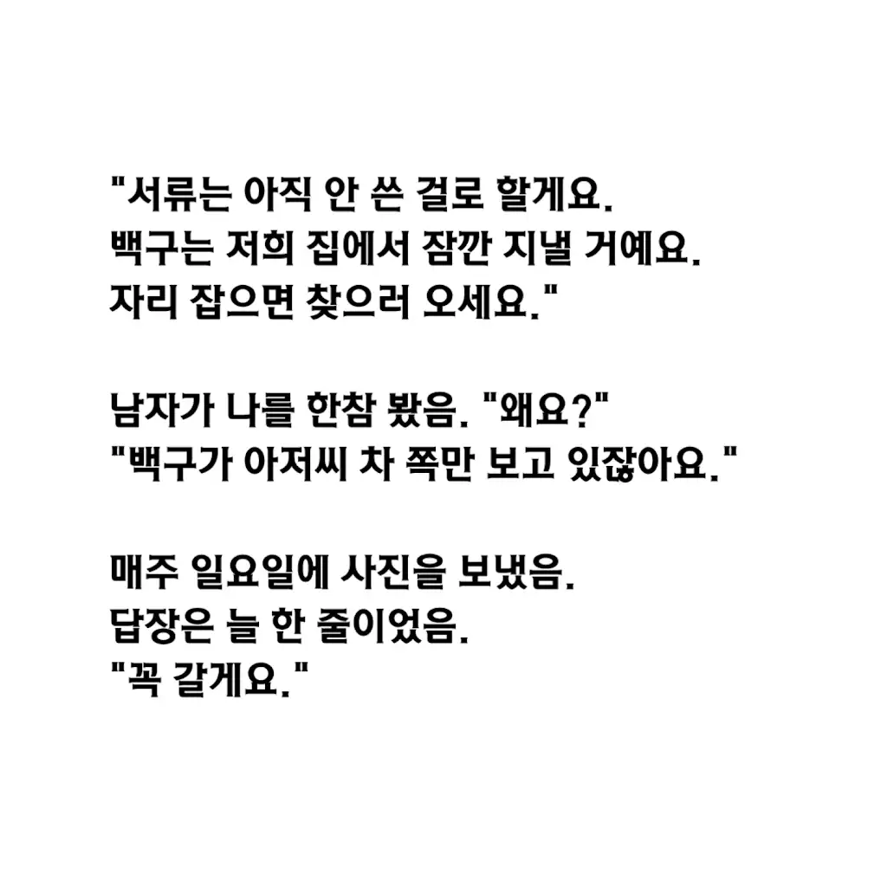
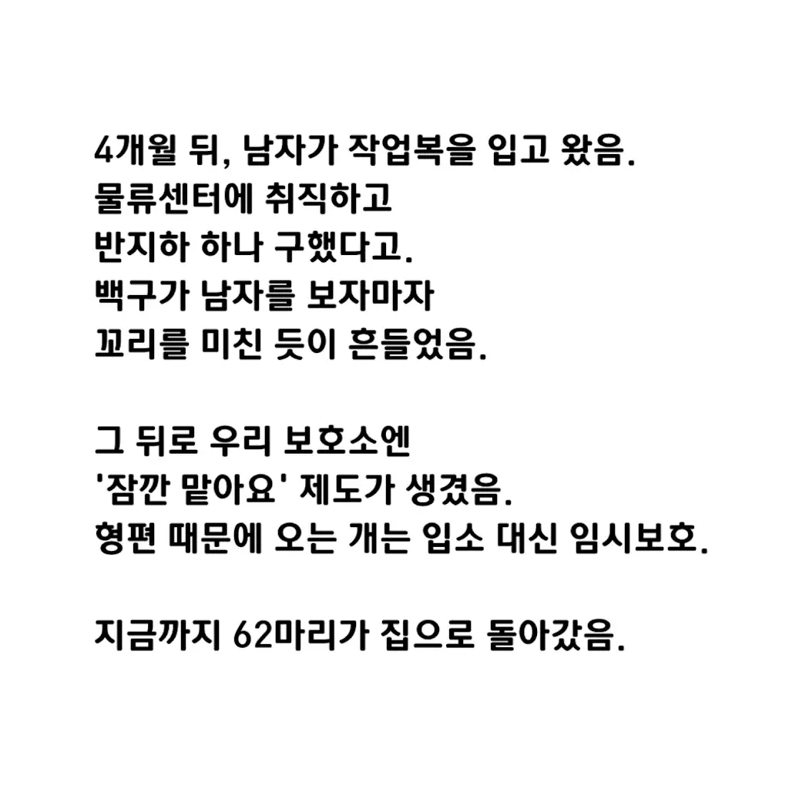
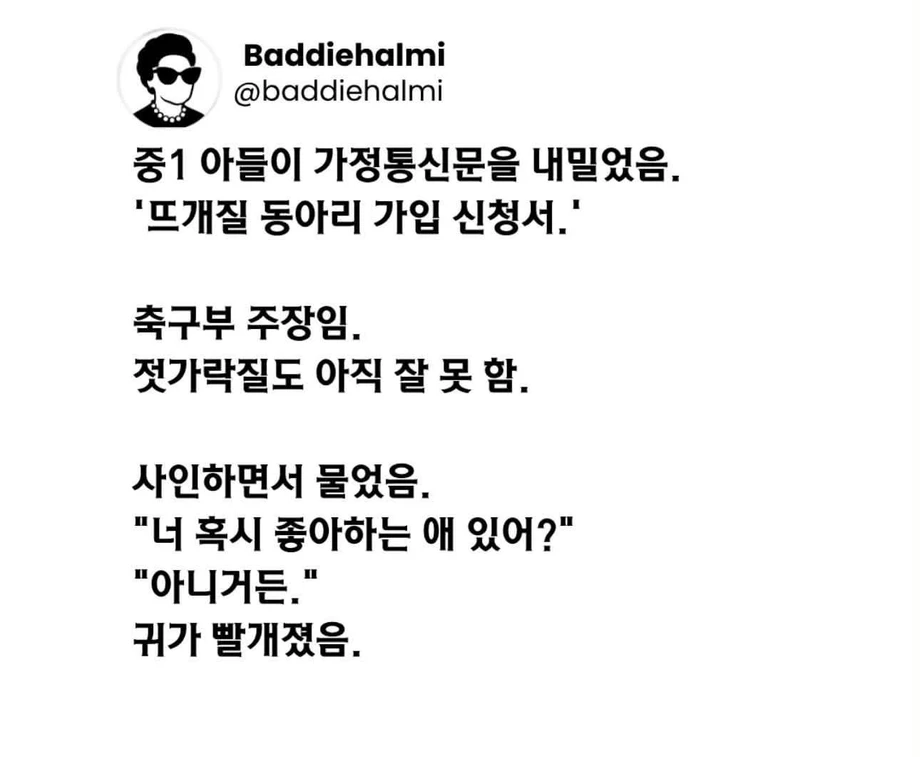
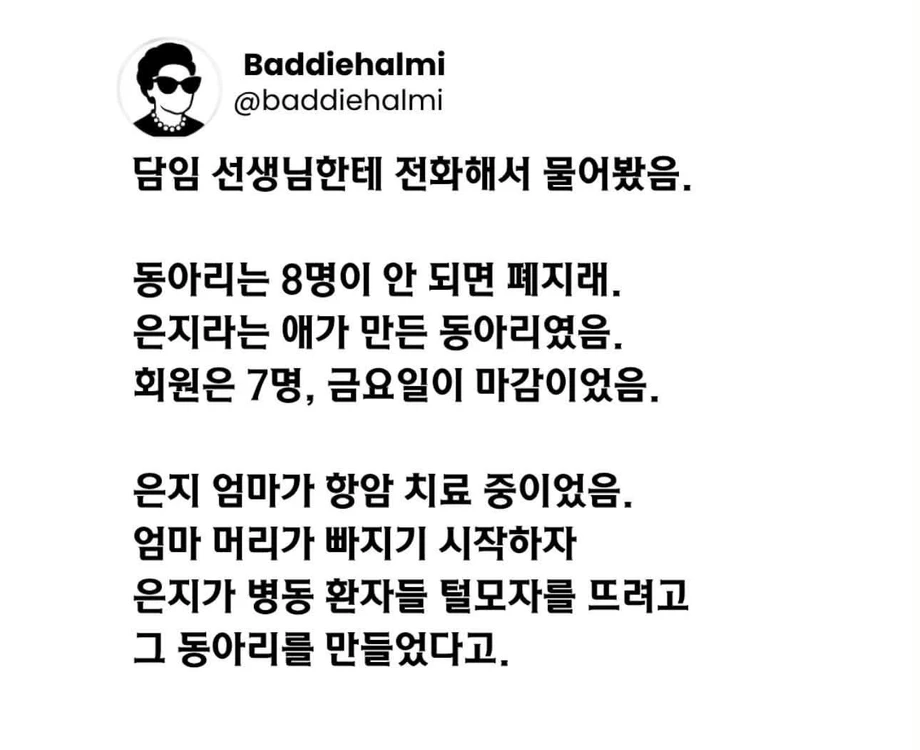
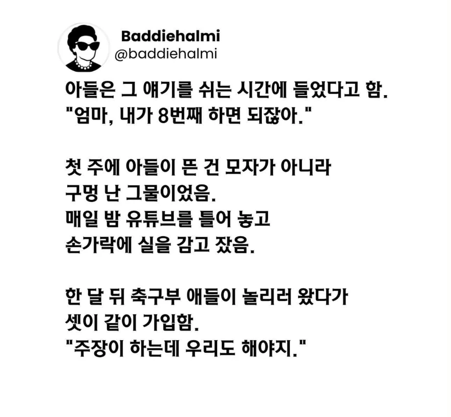
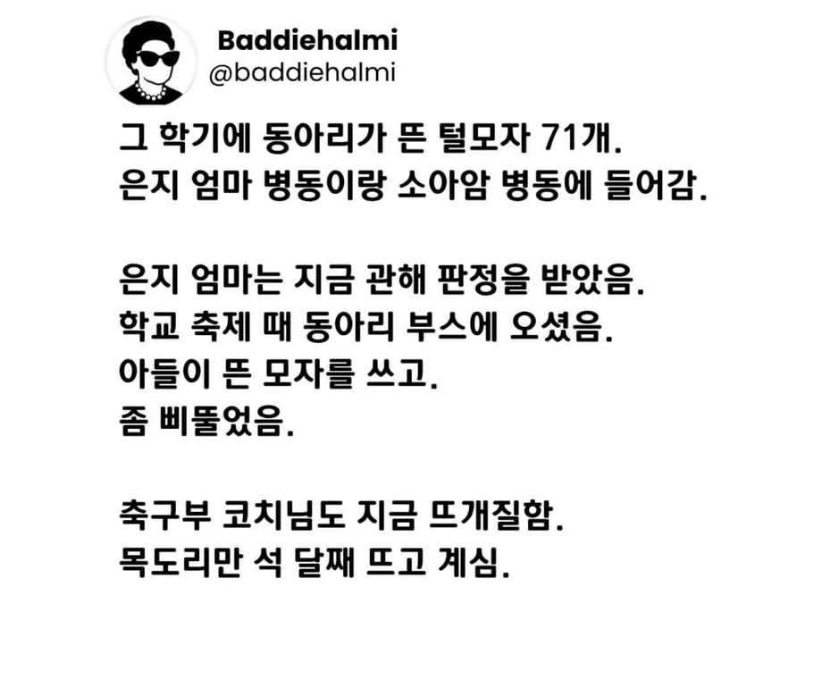

훈훈한글 올리는거 좋아했는데 이 씨발 이제 ai가 여기까지 판치니 올리기가 어려움







훈훈한글 올리는거 좋아했는데 이 씨발 이제 ai가 여기까지 판치니 올리기가 어려움
인스타 댓글 보면 이거 ai야 하는 놈 상대로 안다고 빠큐하는 짤 많이 보이더라
솔직히 나쁜 내용 아니고서야 진실에 집착할 필요는 없다고 봄
ㅠㅠ
어릴때 단편영화 만들고싶어서 짧은 스토리 많이 썼었는데, 그거랑 똑같네
외국 살러 갈 때 키우던 개 친척집에 맡겼는데 2년만에 만나니까 눈물을 줄줄 흘렸었지
개드립은 언제부턴가 팩트 안따지고 웃기면 ㅇㅋ 슬프면 ㅇㅋ 재밌으면 ㅇㅋ 아니었나? 게시글에 반하는 댓글 달면 다구리 존나 치던데 ㅋㅋ